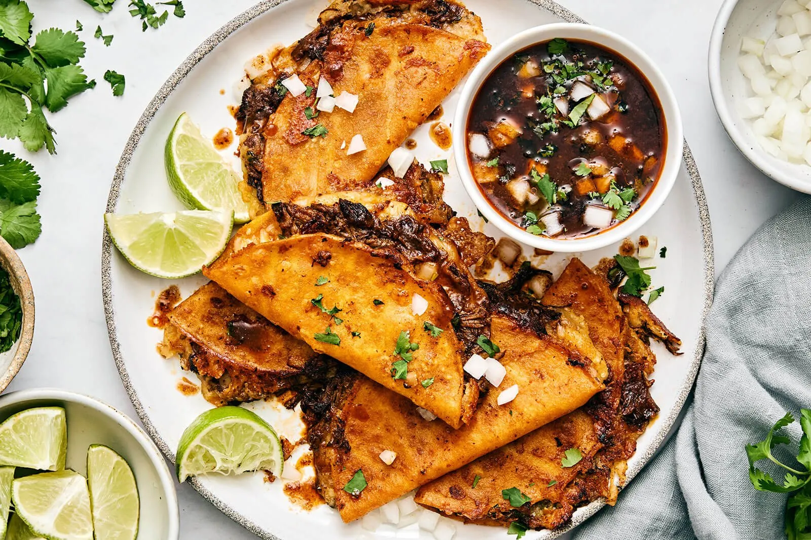

The Perfect Birria Tacos

Description:
Birria tacos are a flavorful and indulgent dish made by slow-cooking marinated beef or lamb in a rich, spiced broth until it's tender and shreddable. The tortillas are dipped in the top layer of the birria broth, then filled with the meat and cheese before being grilled to a crispy, golden perfection. The tacos are typically served with a side of the flavorful birria broth for dipping, and topped with fresh cilantro, onions, and a squeeze of lime for a deliciously savory and satisfying meal.
Ingredients:
For the Birria:
- 2.5 lbs beef chuck roast (or a mix of beef and lamb)
- 4 dried guajillo chiles
- 2 dried ancho chiles
- 1 chipotle pepper in adobo (optional for more heat)
- 1 large onion, roughly chopped
- 5 garlic cloves, peeled
- 2 tomatoes, roughly chopped
- 2 tablespoons apple cider vinegar
- 1 cinnamon stick
- 2 bay leaves
- 1 teaspoon cumin
- 1 teaspoon oregano
- ½ teaspoon ground cloves
- Salt and pepper to taste
- 4 cups beef broth (or water)
- 2 tablespoons vegetable oil
For the Tacos:
- Corn tortillas
- Shredded cheese (optional but highly recommended, like Oaxaca or Monterey Jack)
- Chopped cilantro
- Diced onion
- Lime wedges for serving
Instructions:
- Prepare the chiles:
- Remove the stems and seeds from the dried guajillo and ancho chiles. In a skillet over medium heat, lightly toast the chiles for 1-2 minutes until fragrant, being careful not to burn them.
- Transfer the toasted chiles to a bowl of hot water and let them soak for 10 minutes to soften.
- Make the birria marinade (adobo):
- In a blender, add the softened chiles, chipotle pepper (if using), garlic, onion, tomatoes, vinegar, cumin, oregano, cloves, salt, and pepper. Blend until smooth. If the sauce is too thick, add a little of the soaking water from the chiles.
- Marinate the meat:
- Cut the beef into large chunks. Rub the blended chile sauce (adobo) all over the meat, ensuring it's fully coated. Let the meat marinate for at least 1 hour, or preferably overnight in the fridge for more flavor.
- Cook the birria:
- Heat oil in a large pot over medium heat. Sear the marinated meat on all sides until browned, about 5-7 minutes.
- Add the beef broth (or water), bay leaves, and cinnamon stick to the pot. Bring to a boil, then lower the heat and cover. Simmer for 2-3 hours, or until the meat is tender and easily shreds with a fork. You can also cook it in a slow cooker on low for 6-8 hours.
- Once the meat is tender, remove it from the pot and shred it. Skim the excess fat from the broth (you’ll use this fat for the tacos) and reserve the broth for dipping.
- Assemble the tacos:
- Heat a skillet or griddle over medium heat. Dip each corn tortilla into the top layer of the reserved broth (where the fat is) and place it on the skillet.
- Add some shredded cheese and a portion of the shredded birria meat onto one side of the tortilla. Let the cheese melt and the tortilla crisp up a bit, then fold the tortilla in half to form a taco.
- Cook until both sides are golden brown and crispy.
- Serve:
- Serve the tacos with a side of the warm birria broth for dipping. Garnish with chopped cilantro, diced onion, and lime wedges.